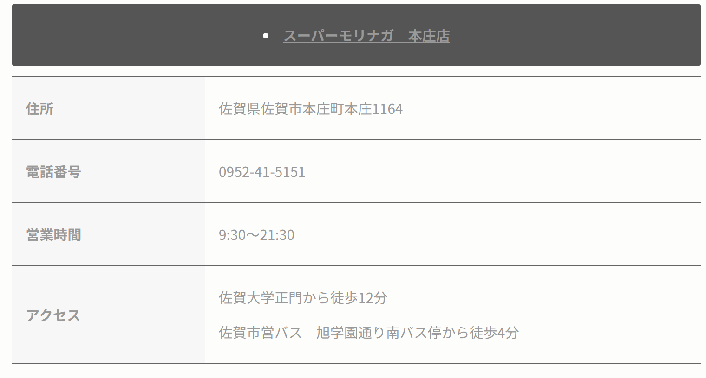

Food or Dieとは...?
こんにちは。このサイトではスーパーやコンビニなどで売れ残っている様々な値引き商品を紹介しています。日本ではまだ食べられるのに捨てられてしまう食べ物「フードロス」の量は年間で約612万トンもあります。これは国民1人あたりに換算すると、毎日お茶碗１杯分の食料を捨てていることになります。
私たちはフードロスを少しでも減らして環境を守るために、「スーパーやコンビニでの食品廃棄削減」を目指しています。まだ食べられるけど、賞味期限や消費期限が迫っていて割引価格で販売されている商品を、店舗ごとに掲載しています。お住まいの地域のスーパー等で売れ残っている商品を事前にチェックして買い物に行くことができます。安くお得に商品をゲットしてフードロス削減にも貢献できるダブルチャンスです！あなたのカートに最後の一品をよろしくお願いします！
限定特価！あなたのカートに最後の一品を！
使い方
1.メニュー画面の見つけるボタンをクリック
↓
2.気になる店舗をクリック

↓3.お得な商品情報をチェック

4.チェックしたお目当ての商品を店舗でゲット!